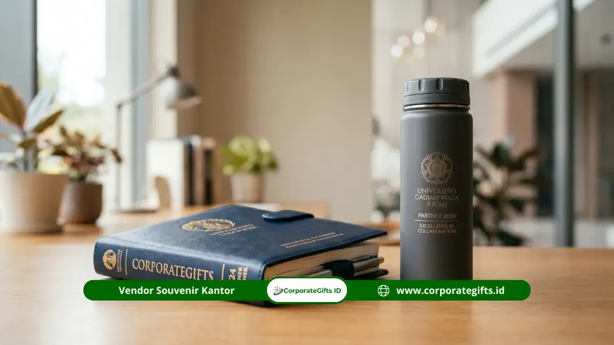

Corporate Gifts ID - Souvenir mitra kampus adalah cinderamata resmi berlogo ganda yang diberikan kepada instansi, perusahaan, atau lembaga yang memiliki kerja sama formal (MoU atau MoA) dengan perguruan tinggi negeri maupun swasta di Indonesia. Produk gift ini biasanya berupa tumbler tahan panas, plakat penghargaan elegan, atau perlengkapan kantor premium yang secara proporsional mencantumkan identitas kedua institusi. Keberadaannya berfungsi sebagai simbol apresiasi kelembagaan sekaligus media diplomasi dan branding jangka panjang bagi kedua belah pihak.
Poin Kunci Pengadaan Souvenir Mitra Kampus:
- Target Penerima Formal: Cinderamata resmi diperuntukkan bagi instansi pemerintah, BUMN, korporasi swasta, atau organisasi riset yang memiliki ikatan MoU/MoA aktif dengan perguruan tinggi.
- Kustomisasi Dual Logo: Mengintegrasikan lambang universitas dan identitas brand mitra secara harmonis dengan standar warna pantone resmi.
- Nilai Simbolis & Fungsional: Memadukan formalitas seremonial dengan kegunaan praktis jangka panjang agar senantiasa digunakan dan dipajang.
- Kisaran Anggaran Fleksibel: Tersedia pilihan ekonomis mulai Rp25.000/unit untuk item massal hingga plakat eksklusif di atas Rp500.000/unit.
- Protokol & Tata Kelola: Memerlukan persetujuan unit humas/protokoler kampus serta kelengkapan administrasi faktur B2B dari vendor terpercaya.
Menurut data industri gift korporat di Indonesia, sekitar 68% lembaga yang meresmikan perjanjian kerja sama dengan kampus memberikan souvenir eksklusif pada momen penandatanganan berkas MoU atau MoA resmi (Sumber: Riset Vendor Gift Korporat Indonesia, 2024). Hal ini menegaskan bahwa cinderamata bukan sekadar formalitas seremonial, melainkan representasi martabat dan komitmen kolaborasi antarinstitusi.
Apa Itu Souvenir Mitra Kampus?
Souvenir mitra kampus adalah cinderamata resmi bertema kelembagaan yang dirancang secara khusus untuk konteks kerja sama antarlembaga, baik dari pihak universitas kepada institusi mitra, maupun sebaliknya dari perusahaan mitra kepada pimpinan kampus.
Berbeda dengan cinderamata seminar umum atau merchandise mahasiswa biasa, produk souvenir mitra kampus wajib memuat identitas visual kedua institusi secara elegan. Di samping penempatan logo kampus dan logo perusahaan mitra, item ini kerap dilengkapi dengan ukiran tanggal seremonial kerja sama, slogan kemitraan, atau nomor nota kesepahaman.
Penggunaan cinderamata kemitraan kampus mencakup berbagai momen strategis, antara lain:
- Penandatanganan nota kesepahaman resmi (MoU - Memorandum of Understanding) atau perjanjian kerja sama operasional (MoA - Memorandum of Agreement).
- Kunjungan delegasi dinas resmi, studi banding pimpinan rektorat, atau dekanat ke kantor mitra korporasi.
- Acara seremonial wisuda, dies natalis, dan peringatan lustrum universitas.
- Penyelenggaraan simposium ilmiah, konferensi internasional, lokakarya bersama, serta kuliah umum praktisi industri.
- Serah terima program magang terintegrasi (MBKM), riset gabungan, hingga program beasiswa CSR korporat.
Siapa yang Membutuhkan Souvenir Mitra Kampus?
Pihak yang membutuhkan souvenir mitra kampus adalah instansi, lembaga riset, organisasi nirlaba, serta korporasi yang menjalin relasi strategis dengan perguruan tinggi. Beberapa kelompok pengguna utama cinderamata ini meliputi:
- Instansi Pemerintah Pusat dan Daerah: Kementerian, dinas tingkat provinsi/kota, dan badan litbang pemerintah yang bekerja sama dalam penyusunan naskah akademik maupun kajian kebijakan publik bersama civitas academica.
- Perusahaan BUMN dan Korporasi Swasta: Perusahaan skala nasional dan multinasional yang menyelenggarakan program magang bersertifikat, rekrutmen kampus, maupun pendanaan program Corporate Social Responsibility (CSR).
- Lembaga Riset dan Think Tank: Organisasi riset independen yang melakukan kolaborasi penelitian terapan dan hilirisasi inovasi bersama laboratorium kampus.
- Asosiasi Profesi dan Industri: Organisasi profesi seperti asosiasi advokat, akuntan, arsitek, atau insinyur yang menyelaraskan kurikulum program studi dengan standar industri.
- Organisasi Internasional dan Lembaga Donor: Institusi luar negeri yang menjalin kerja sama program pertukaran dosen, mahasiswa, serta beasiswa studi lanjut.
Jenis Produk Souvenir Mitra Kampus yang Paling Populer
Pemilihan jenis cinderamata sangat menentukan impresi profesional yang terbentuk di benak pimpinan lembaga. Berikut adalah lima kategori produk souvenir kemitraan kampus yang paling banyak dipilih untuk agenda seremonial B2B di Indonesia:
1. Perlengkapan Kantor Berlogo Institusi
Produk perlengkapan kantor seperti pulpen metal eksklusif dengan ukiran laser gravir nama pejabat, notebook cover kulit hardcover dengan emboss logo, dan map folder sertifikat kerja sama merupakan opsi paling fungsional. Produk ini dipakai harian di meja kerja pejabat sehingga secara konstan mengingatkan komitmen kemitraan.
2. Tumbler dan Peralatan Minum Premium
Tumbler vacuum flask stainless steel berstandar SUS 304 berkapasitas 500 ml dengan kemampuan menjaga suhu panas/dingin hingga 12 jam menjadi souvenir yang sangat diminati. Didukung teknik sablon UV print atau laser marking dual logo, tumbler ini menjadi cinderamata yang ramah lingkungan dan berumur pakai panjang.
3. Plakat dan Trofi Penghargaan Kerja Sama
Plakat merupakan simbol seremonial paling otentik dalam tradisi akademik. Dibuat dari kombinasi kayu jati, akrilik bening tebal, resin bening, atau lempengan kuningan etsa, plakat biasanya langsung diserahterimakan di atas panggung saat penandatanganan MoU dan dipajang di etalase ruang rektorat atau direksi.
4. Tas Eksklusif Beridentitas Kampus
Tas ransel laptop kerja berbusa tebal, tas dokumen kanvas premium, atau tote bag semi-kulit berlogo kedua institusi berfungsi sebagai media promosi berjalan yang elegan. Setiap kali tas dibawa ke simposium atau forum eksternal, visibilitas brand kedua lembaga ikut terangkat secara organik.
5. Produk Digital dan Aksesoris Teknologi
Dalam era transformasi digital, perangkat seperti power bank wireless berkapasitas besar, flashdisk kartu berlogo ganda, speaker bluetooth meja, dan desk mat pengisi daya nirkabel banyak diminati oleh kampus berbasis teknik, informatika, serta mitra korporasi digital.

Pilihan perlengkapan kantor dan paket gift eksklusif sebagai cinderamata resmi kerja sama antarlembaga dan perguruan tinggi.
Mengapa Souvenir Mitra Kampus Penting untuk Branding Institusi?
Mengalokasikan anggaran untuk souvenir mitra kampus berkualitas memberikan timbal balik reputasi yang melampaui sekadar biaya belanja barang. Berdasarkan temuan Promotional Products Association International (PPAI) tahun 2023, sebanyak 83% penerima corporate gift berkualitas tinggi mempertahankan pandangan positif terhadap institusi pemberi hadiah selama lebih dari satu tahun.
Secara strategis, manfaat konkret yang diperoleh meliputi:
- Penguatan Brand Awareness Institusional: Logo kampus dan mitra terpatri pada barang yang digunakan berulang kali dalam aktivitas profesional.
- Bukti Fisik Komitmen Kerja Sama: Menjadi artefak konkret yang dapat diabadikan dalam rilis pers, majalah internal kampus, hingga dokumentasi media sosial resmi.
- Sarana Diplomasi Kelembagaan: Memberikan sinyal penghormatan, keseriusan tata kelola, dan penghargaan atas kontribusi masing-masing pihak.
- Media Komunikasi Budaya & Nilai: Mengomunikasikan nilai inovasi, kepedulian lingkungan (eco-friendly), atau kemewahan profesional melalui material produk yang dipilih.
Bagaimana Cara Memilih Souvenir Mitra Kampus yang Tepat?
Pengadaan souvenir institusi memerlukan kecermatan agar anggaran terserap secara akuntabel dan menghasilkan dampak branding yang maksimal. Berikut adalah langkah praktis yang dapat diterapkan:
- Tetapkan Konteks dan Tingkat Formalitas: Sesuaikan tingkat kemewahan produk dengan audiens penerima. Untuk penandatanganan kerja sama tingkat pimpinan rektorat dan direksi, plakat kayu etsa atau gift set eksklusif adalah pilihan utama. Sementara untuk peserta seminar bersama atau mahasiswa magang, tumbler dan tote bag lebih proporsional.
- Prioritaskan Kualitas Material & Finishing: Hindari produk dengan finishing kasar, jahitan mudah lepas, atau sablon yang gampang mengelupas. Citra institusi tercermin langsung dari ketahanan fisik cinderamata yang diserahkan.
- Verifikasi Presisi Kustomisasi Logo Ganda: Pastikan vendor memiliki kemampuan setting proporsi logo kedua institusi secara seimbang sesuai pedoman grafis identitas visual (brand guideline) masing-masing pihak.
- Pilih Vendor B2B yang Tertib Administrasi: Pastikan vendor penyedia mampu menerbitkan faktur pajak resmi, kuitansi bermeterai, surat penawaran harga formal, serta melayani pengiriman bergaransi ke seluruh kota di Indonesia.
Tabel Estimasi Kategori & Kisaran Budget Souvenir Mitra Kampus
Untuk mempermudah penyusunan rencana anggaran biaya (RAB) pengadaan di unit kerja sama atau humas, berikut adalah perbandingan kisaran estimasi biaya per unit berdasarkan kategori produk:
| Kategori Paket | Contoh Item Produk | Kisaran Harga Satuan | Karakteristik & Peruntukan Ideal |
|---|---|---|---|
| Segmen Ekonomis | Pulpen metal, mug keramik, lanyard id card dual logo | Rp25.000 - Rp75.000 | Fungsional harian, cocok untuk event massal, kuliah umum gabungan, atau peserta program magang. |
| Segmen Menengah | Tumbler stainless vacuum flask, notebook kulit PU, pouch kanvas | Rp75.000 - Rp200.000 | Modern, bernilai guna tinggi, ideal untuk delegasi kunjungan dinas dan narasumber pakar industri. |
| Segmen Premium | Plakat kayu akrilik grafir, tas kerja laptop, executive leather gift set | Rp200.000 - Rp500.000+ | Simbol seremonial formal penandatanganan MoU, sangat berkelas dan awet dipajang di ruang pimpinan. |
Kesalahan Umum dalam Memilih Souvenir Mitra Kampus
Dalam praktiknya, beberapa instansi kerap menemui kendala teknis saat memesan souvenir. Beberapa kekeliruan yang perlu diantisipasi antara lain:
- Pemesanan Terlalu Dekat dengan Hari H: Produksi custom dual logo memerlukan waktu pengerjaan 7 hingga 21 hari kerja. Pemesanan mendadak berisiko menurunkan ketelitian quality control.
- Melewatkan Pembuatan Sampel (Mockup/Proofing): Selalu minta digital mockup atau sample proof fisik sebelum produksi massal untuk memastikan ketepatan ejaan nama gelar dan keakuratan warna logo.
- Mengabaikan Desain Kemasan (Packaging): Souvenir yang bagus akan kehilangan separuh daya tariknya jika hanya dibungkus plastik bening tanpa box custom berpita rapi.
- Tanpa Konfirmasi Protokol Penggunaan Logo: Pastikan desain penempatan lambang kampus telah divalidasi oleh biro humas atau sekretariat pimpinan kampus terkait.
Kesimpulan: Investasi Citra Kemitraan Jangka Panjang
Pengadaan souvenir mitra kampus yang dirancang dengan konsep matang bukan sekadar pengeluaran seremonial, melainkan investasi strategis dalam merawat reputasi dan memperkokoh ikatan kolaborasi kelembagaan.
Dengan memilih paduan produk yang berfaedah tinggi, material berstandar eksekutif, serta sentuhan branding yang elegan, hubungan kemitraan antara dunia industri dan institusi pendidikan tinggi akan terjalin semakin solid dan harmonis. Konsultasikan kebutuhan souvenir institusi Anda bersama tim CorporateGifts.ID melalui formulir penawaran harga resmi hari ini.